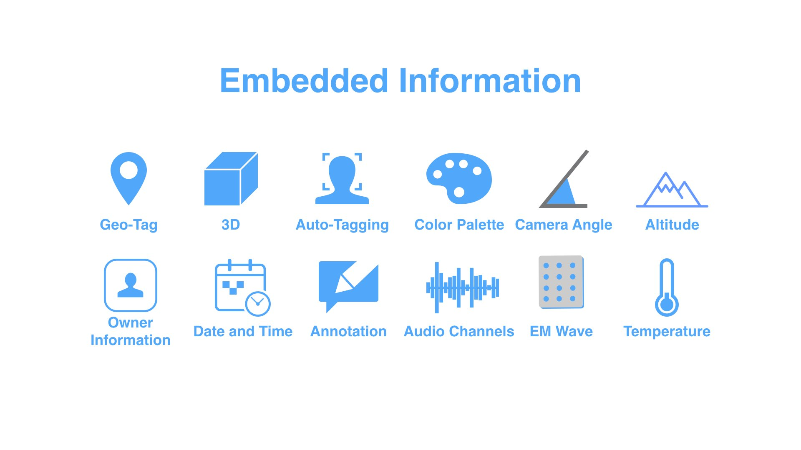
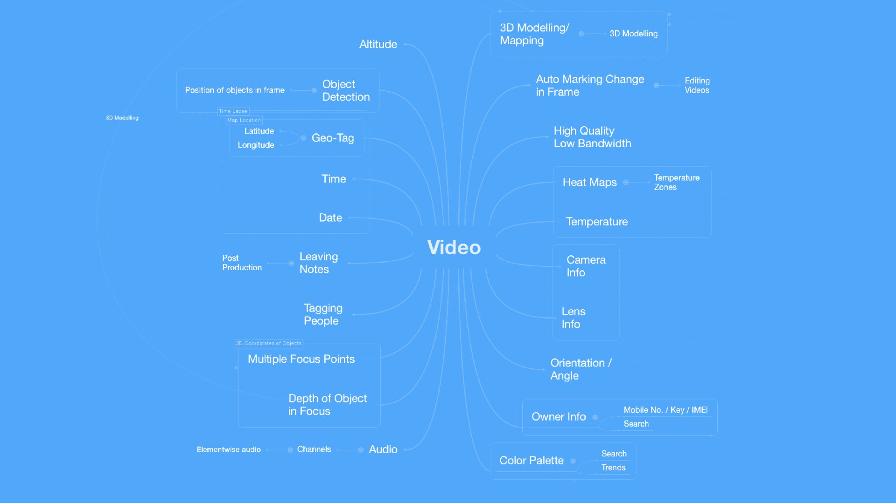
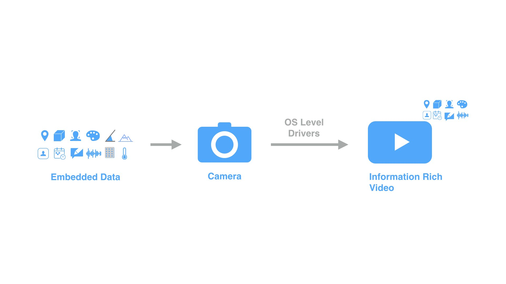
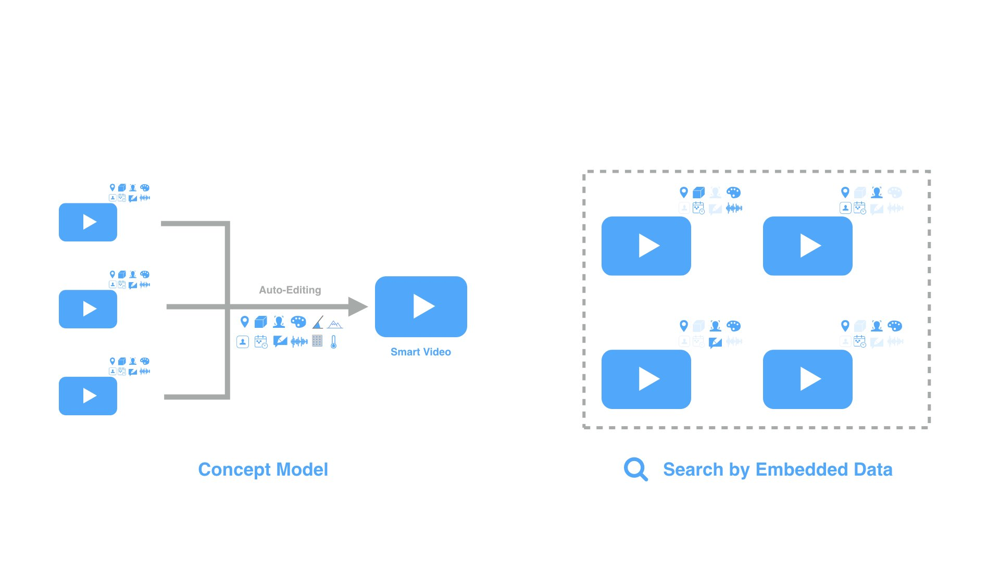
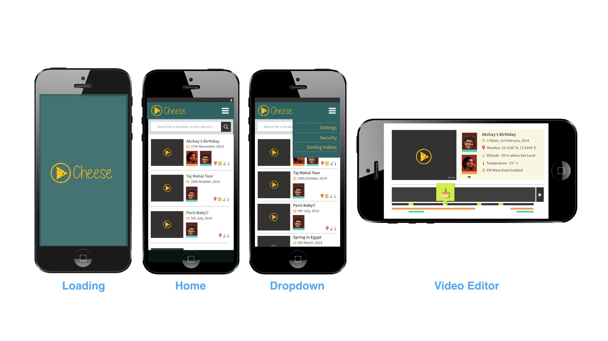

A Smart Media Exploration on embedding information in existing media. Guide : Prof. Ravi Poovaiah Collaborators : Jayati Bandyopadhyay, Dileep Mohanan
The project is an exploration in embedding different types of information (metadata) in the existing media of a video. What are the possibilities when a video file contains information about the location of different frames in the video, 3D dimensional contour data, recognizes people and tags them, color palette information, different camera angles, altitude of different frames, owner data, date and time, user annotations, audio channel information, Electromagnetic wave information, temperature at which the different frames were shot, etc. A large number of this data already exists as metadata for the video in general, however frame by frame data is yet missing. This project explores auto video editing and content creation solutions that may be possible on availability of such information rich (smart) media. This information rich media would be easier to search.
Some examples of the possibilities are shown in the following video. These include automatically recognizing the video, its location and auto-naming them, creating contextual video for an event like a birthday, haptic feedback, etc.
Information Rich Media
Following image describes different types of data that can be embedded in the frames of a video. The electromagnetic wave information can help a visually disabled person experience the video through sensory substitution (vibrations). Here is a link to the possibility of using electromagnetic waves

Applications of a Smart Video (Mind Map)

Smart Video Generation
The camera of the device along with a host of other sensors would embed data into the frames of the video with the help of OS Level drivers.

Auto-editing and Search

Mid Fidelity Wireframes

Tags
Concept, Cheese, Smart Media, Video, Content Creation, New Media, Camera, Geotag, electromagnetic wave, motion graphics, interaction design, hci, data, information, metadata, IITB, Indian Institute of Technology, Bombay, Mumbai